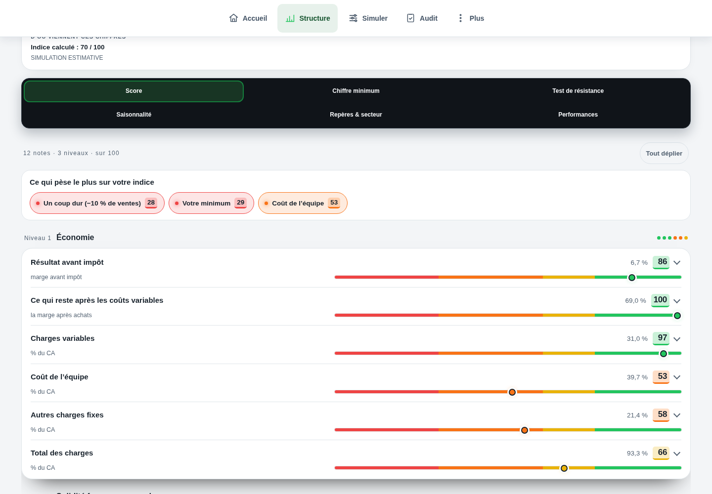

Comprendre le sujet
Un tableau de bord qui mène à une action
Un tableau de bord utile répond à une question précise : où en êtes-vous, qu’est-ce qui explique l’écart et que vérifier ensuite ?
La réponse complète et ses limites
Un tableau de bord utile répond à une question précise : où en êtes-vous, qu’est-ce qui explique l’écart et que vérifier ensuite ? Affichez période, provenance et fiabilité avec les chiffres. Le solde, la contribution et le besoin du jour apportent des lectures différentes ; aucun score ne doit effacer une donnée manquante.
Comprendre
La méthode, en clair.
LES POINTS QUI CHANGENT LA LECTURE
La méthode, en clair.
Des repères à appliquer dans votre établissement. Le détail reste accessible, sans perdre le fil.
Choisir la question du jour
Pour un service, regardez le besoin de ventes et la capacité. Pour le mois, rapprochez contribution et charges. Pour la carte, examinez plats vendus et contribution totale. Mélanger ces trois périodes sur un seul indicateur empêche de savoir quoi faire.
Séparez réalisé et projection. Une journée saisie, une hypothèse de fin de mois et un exemple de démonstration ne doivent pas partager le même libellé.
Garder la preuve près du résultat
Pour chaque lecture, exposez la formule, les postes inclus et les éléments manquants. Un résultat peut être calculable mais incomplet. La présence d’un nombre ne suffit pas à le déclarer fiable.
Le score de structure et l’indice de carte portent des périmètres différents. Ils ne s’additionnent pas et une bonne carte ne corrige pas automatiquement des charges de structure trop élevées.
Terminer par une prochaine vérification
Un écart matière mène aux stocks, prix et rendements. Un écart de ventes mène aux services et au mix. Le bon tableau de bord relie ce constat à la donnée à examiner, puis permet de suivre l’effet de la décision.
Calculer
LE LABORATOIRE
Vos hypothèses.
Une lecture immédiate.
Modifiez les données, observez le résultat, puis vérifiez ce que le calcul permet de conclure.
Interpréter
UN SCÉNARIO, JUSQU’AU BOUT
Le calcul, jusqu’au bout
Le CA monte, le solde baisse
La comparaison révèle une baisse de 1 500 € malgré la progression des ventes. Le poste matière demande un rapprochement de volumes, prix et stocks.
Exemple fictif · hypothèses modifiables
| Solde précédent | 3 000 € |
|---|---|
| Solde actuel | 1 500 € |
Les montants sont arrondis pour la lecture.
Les calculs gardent leur précision.
Les questions qui restent
Faut-il tout afficher sur le premier écran ?
Le premier écran doit rendre la priorité lisible. Les détails et formules restent accessibles pour expliquer cette priorité.
Un score vert suffit-il ?
Non. Le périmètre, les données manquantes et la décision à prendre restent indispensables.
Sur quoi repose cette lecture
Les formules et hypothèses sont affichées pour être contrôlées. Les exemples chiffrés sont fictifs et ne constituent pas des statistiques de métier. Les définitions et repères institutionnels utilisés par Verdict sont regroupés dans les sources.
Agir
Votre prochaine action
Choisissez un écart documenté et reliez-le à un contrôle, avec une date de suivi.
DANS L’APPLICATION VERDICT
Structure économique : résultat avant impôt, répartition des charges et diagnostic.

Structure économique dans la démonstration fictive Brasserie Collet : résultat avant impôt, coûts de l’équipe et autres charges.
Voir l’écran en grand
Résultat avant impôt : 6,7 %
Coût de l’équipe : 39,7 %
Autres charges fixes : 21,4 %
LES CHIFFRES NE VIVENT PAS SÉPARÉMENT.
Reliez cette décision
au reste de votre activité.
Ventes, carte, inventaire : découvrez la lecture proposée par Verdict, avec vos données et vos hypothèses.